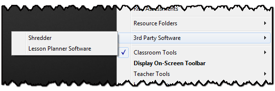
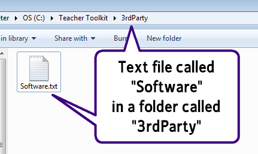

3rd Party Software
Software administrators may wish to take advantage of the Teacher Toolkit's ability to act as a launcher.

To use this feature:
1) Create a folder in the same location as the Teacher Toolkit called "3rdParty".
2) Create a text file in this new folder called "Software.txt"

3) In this text file, add two entries for each piece of software, one with the name you would like to display, and one showing where the exe file is, for example:
Name=Shredder
Link=Shared Software\Shredder\Shredder.exe
Name=Lesson Planner Software
Link=C:\Program Files\Lesson Planner\LP.exe
Name=Disk Scanner
Link=..\..\..\Software on my USB\DiskScan\DiskScanner.exe